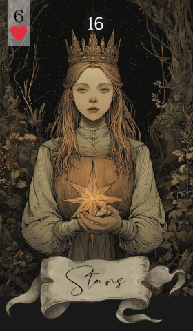

第 16 张 · 红桃 6
星星
希望
指引
启发
方向
愿景
星星在暗处点起一盏灯，为你所盼望的事情带来指引与希望。它请你抬头看看，相信这一路自有托举，让灵感与清明照亮脚下的路。
免费抽牌 →
在雷诺曼中，星星代表希望与指引。它是一个正面的征兆，说明你走在对的路上——哪怕前方看着还不明朗。这张牌承载着启发的力量，鼓励你怀抱志向、朝目标伸手，因为有光在前面引路。
星星讲的不是空想。它提醒你：只要愿景不散、力气不停，梦想就有落地的可能。它也可能指向一位导师或榜样，那个人能替你把路照亮。这张牌出现时，它请你继续抱着希望——周围的势头是帮你的，办法就在手边。
在感情里，星星意味着一段让人有盼头、也让人振作的联结。若你单身，可能会遇到一个像光一样的人，把事情照得更清楚、更明亮。若你在关系中，它可能指感情重新回暖，或两人对未来有了共同的图景，又或是在难捱的日子里彼此指引，反而比从前更贴近。
在事业上，星星预示一段有灵感、有方向的时期。你的付出可能会被看见，工作也可能与你自己的目标和价值观贴得更近。会有帮手和前辈在旁边，带着你往成功的方向走。把想做的事看清楚，然后信任这个过程。
保持希望，把目光放到更远的地平线上。星星鼓励你守住心里的志向，也相信在需要的时候，指引自会出现。相信可能性，也相信自己走的这条路——每一步都在把你送向目标。
星星通常会用希望与方向的色彩去影响身旁的牌。以下是它与其余各张雷诺曼牌的交织：
传统牌面上，星星是天上的向导，常画作夜空中一颗明亮的星。它象征照亮，把旅人从黑暗领向光。这幅画面点明了它的角色——希望与方向的灯塔，暗示着即便身处不确定，清明也就在头顶。